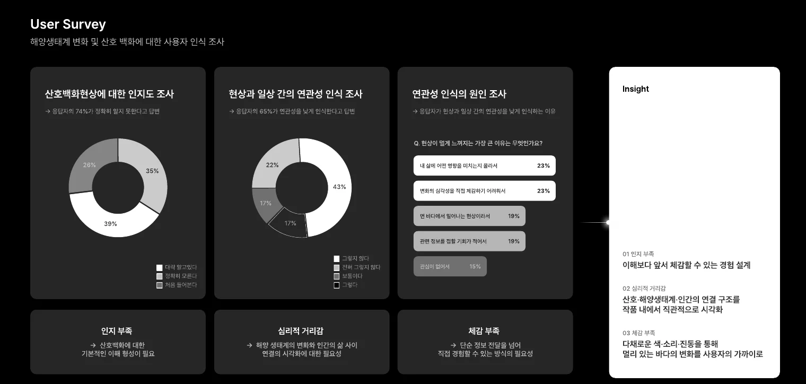
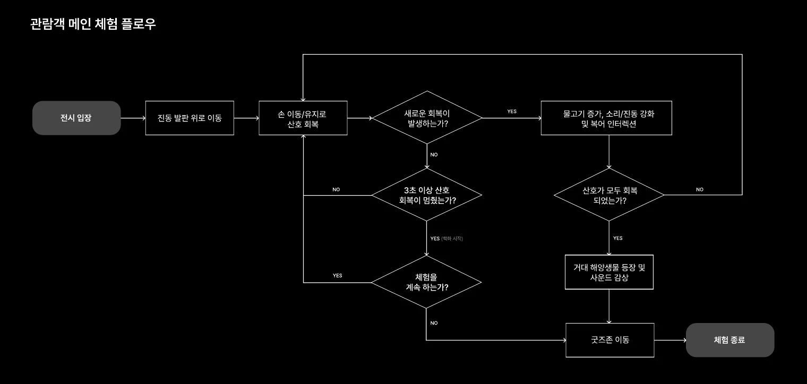
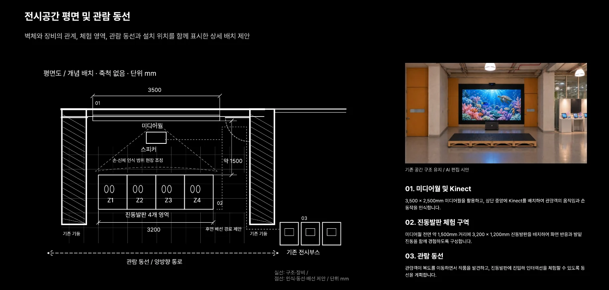
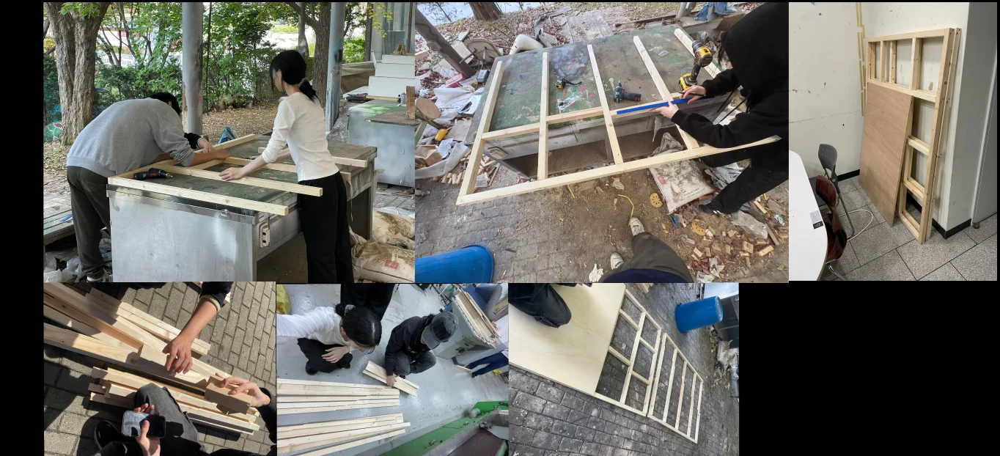
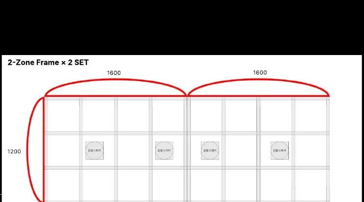

팀 사용자 조사 응답자
PROCESS 01 / 03 PLANNING
멀리 있던 바다를,
우리의 감각 가까이.
관찰과 질문에서 시작해, 관람객의 작은 관심이 바다의 변화로 이어지는 경험을 설계했습니다.
제작 과정 살펴보기 ↓01알고 있는 바다에서,
알고 있는 바다에서,
느끼는 바다로.
산호의 색이 사라질 때,
우리가 놓치는 것은 무엇일까요?
공명체의 기획은 바다의 위기를 알고 있어도 그 변화를 가까이 느끼기 어렵다는 문제에서 출발했습니다. 현장 답사와 사례 조사, 사용자 설문을 통해 정보와 감각 사이의 거리를 살폈습니다.
관람객의 관심이 산호의 색, 해양생물의 움직임, 소리와 진동으로 이어지는 경험을 설계했습니다. 회복은 실제 생태 복원을 재현하는 것이 아니라 지속적인 관심의 필요성을 전하는 전시적 표현입니다.
02
사용자의 거리감을 읽다.
산호백화를 정확히 알지 못한다고 응답
현상과 일상의 연관성을 낮게 인식
팀 설문 · 2026.09.19–09.21 · 8문항 · 주요 응답 연령 20대. 전체 인구를 대표하는 통계는 아닙니다.
인지에서 감각으로
긴 설명에 앞서 색과 소리의 변화를 경험하도록 진입 장벽을 낮춥니다.
먼 바다를 가까이
산호·해양생물·인간의 연결을 시각화하여 일상과의 관계를 전달합니다.
한 번에서 지속으로
관심이 멈추면 바다가 다시 조용해지는 순환 구조로 메시지를 남깁니다.

크게 보기 ↗03
작은 손짓이 바다 전체로.
복도를 지나던 관람객이 발판에 올라 손을 움직이면, 회복의 범위에 따라 장면과 소리가 달라집니다.
01 / 05
백화된 바다와 첫 만남
조용한 바다와 백화된 산호 속에서 흰동가리가 시선을 이끕니다. 관람객의 접근이 체험의 시작이 됩니다.

크게 보기 ↗04
지나치는 복도가 체험의 장소로.
관심의 시작
기존 복도의 양방향 동선과 3,500 × 2,500mm 미디어월을 활용합니다. 화면 오른쪽 부스에는 안내물과 굿즈를 배치할 수 있도록 계획했습니다.
감각의 연결
화면 전면의 진동발판에서 시각·청각·촉각이 같은 변화를 전달하도록 설계합니다.
공간과 안전
관람 동선, 센서 범위, 배선과 발판 마감은 실제 설치 환경에서 점검합니다.

크게 보기 ↗05
진동발판을 만들다.
두 개의 목재 프레임
3,200 × 1,200mm 발판을 두 개의 프레임과 18T 합판 상판 네 장으로 나눠 설계했습니다.
상판을 받치는 내부 지지대
투바이투 각재와 내부 지지대를 더해 합판의 지지 간격을 줄이고, 하중으로 인한 처짐을 줄이도록 설계했습니다.
발밑으로 전하는 진동
상판 아래에 진동 스피커를 구역당 하나씩 배치하고, 상판에는 미끄럼 방지 마감을 계획했습니다.

크게 보기 ↗
크게 보기 ↗